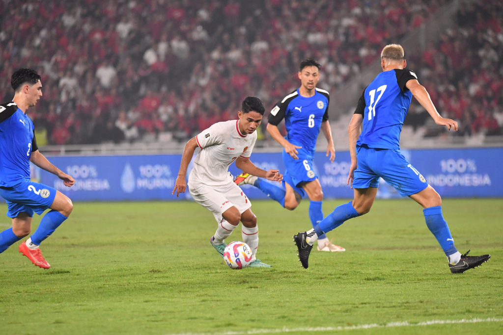

Sejarah
Sepak bola Indonesia pernah mengalami masa kelam ketika PSSI, badan sepak bola nasional, dibekukan oleh FIFA pada tanggal 30 Mei 2015.
Keputusan ini merupakan pukulan telak bagi para pecinta sepak bola di Tanah Air. Pembekuan ini berawal dari konflik antara Kemenpora (Kementerian Pemuda dan Olahraga) dan PSSI yang memuncak, serta kegagalan dalam mengelola kompetisi sepak bola nasional.
Dampaknya sangat luas, mulai dari penundaan liga hingga larangan bagi Timnas Indonesia berpartisipasi dalam kompetisi internasional.
Masa Kelam Sepak Bola Indonesia
Selama setahun saat PSSI dibekukan, sepak bola Indonesia seperti kehilangan arah. Kompetisi berhenti, liga-liga sepak bola mandek, dan yang paling menyedihkan, Timnas Indonesia tak bisa berlaga di turnamen resmi internasional.
Ini bukan hanya mempengaruhi citra Indonesia di kancah sepak bola, tetapi juga memperlambat perkembangan pemain muda. Banyak talenta berbakat yang akhirnya stagnan tanpa kompetisi yang memadai untuk mengasah kemampuan mereka.
Namun, di tengah masa sulit ini, semangat para pemain, pelatih, dan suporter tetap tak pernah pudar. Meskipun berada dalam kondisi yang penuh ketidakpastian, harapan untuk kebangkitan sepak bola Indonesia terus menyala.
Kebangkitan PSSI dan Era Baru Sepak Bola Indonesia
Setelah masa suram tersebut, langkah-langkah perbaikan mulai dilakukan. FIFA mencabut pembekuan PSSI pada Mei 2016, memberikan kesempatan bagi Indonesia untuk kembali ke panggung sepak bola dunia.
Meski begitu, pekerjaan rumah besar masih menanti, terutama dalam mengembalikan reputasi PSSI dan Timnas Indonesia. Perkembangan signifikan baru mulai terlihat ketika Erick Thohir terpilih sebagai Ketua Umum PSSI pada tahun 2023.
Sebagai seorang pengusaha dan tokoh olahraga yang sudah malang melintang di dunia bisnis olahraga internasional, kehadiran Erick Thohir membawa angin segar bagi PSSI.
Ia berkomitmen untuk merombak sistem manajemen sepak bola nasional serta merekrut pelatih berkualitas untuk menangani Timnas Indonesia.
Salah satu langkah strategis terbesar Erick Thohir adalah menunjuk Shin Tae Yong, pelatih asal Korea Selatan, untuk menangani Timnas Indonesia. Shin Tae Yong bukan nama sembarangan; ia memiliki rekam jejak yang impresif, termasuk membawa Korea Selatan ke Piala Dunia 2018 dan mengalahkan Jerman di babak grup. Dengan kehadirannya, ekspektasi masyarakat terhadap Timnas Indonesia kembali meningkat.
Selain menerapkan disiplin dan pendekatan modern yang kuat, Shin Tae Yong juga berperan dalam memaksimalkan potensi tim dengan mendukung program naturalisasi pemain keturunan Indonesia. Proses ini menjadi strategi penting untuk meningkatkan kualitas dan kedalaman skuad Timnas. Pemain-pemain berdarah Indonesia yang memiliki skill potensial dan pengalaman bermain di liga-liga Eropa direkrut untuk menambah daya saing Timnas di level internasional.
Kombinasi antara pembinaan pemain lokal dan naturalisasi pemain keturunan ini memberikan dampak positif yang nyata. Pemain seperti Sandy Walsh, Jordi Amat, dan Shayne Pattynama adalah contoh nyata dari hasil naturalisasi yang diinisiasi pada era kepemimpinan Shin Tae Yong dan Erick Thohir. Kehadiran mereka memperkuat lini pertahanan dan memberi variasi taktik yang lebih luas bagi Timnas.
Di bawah asuhan Shin Tae Yong, Timnas Indonesia menunjukkan peningkatan performa yang signifikan, termasuk keberhasilan lolos ke putaran kualifikasi Piala Dunia 2026. Langkah ini menjadi tonggak penting, mengingat naturalisasi pemain berbakat ikut menambah kedalaman tim, memperkuat mental bertanding, dan memberikan dimensi baru dalam gaya permainan Timnas Indonesia. Dengan sinergi antara pemain lokal dan keturunan, serta manajemen yang kuat, Indonesia kini siap bersaing lebih kompetitif di kancah internasional.
Harapan Menuju Puncak
Kebangkitan Timnas Indonesia dari masa kelam hingga babak baru ini membuktikan bahwa dengan komitmen, disiplin, dan manajemen yang baik, sepak bola Indonesia memiliki potensi besar. Erick Thohir dan Shin Tae Yong telah meletakkan dasar yang kuat untuk masa depan sepak bola nasional. Mimpi untuk melihat Indonesia berlaga di Piala Dunia kini bukan lagi sekadar angan-angan, tetapi sebuah target yang semakin nyata.
Dengan segala perkembangan positif ini, harapan masyarakat terhadap Timnas Indonesia semakin besar. Ke depan, perjalanan masih panjang, namun momentum kebangkitan ini harus terus dijaga dan dikembangkan demi kejayaan sepak bola Indonesia di kancah internasional.
Rank Fifa
Peringkat FIFA menjadi salah satu indikator penting untuk mengukur kemajuan suatu tim nasional dalam kancah sepak bola internasional. Perjalanan Timnas Indonesia dalam beberapa tahun terakhir menunjukkan fluktuasi yang signifikan, terutama ketika kita membandingkan era kepelatihan Simon McMenemy dengan era saat ini di bawah asuhan Shin Tae Yong.
Era Simon McMenemy: Peringkat yang Stagnan
Saat Simon McMenemy memimpin Timnas Indonesia pada tahun 2019, harapan besar sempat muncul, namun sayangnya performa tim nasional justru menurun. Salah satu penyebabnya adalah kekalahan berturut-turut di berbagai pertandingan kualifikasi Piala Dunia dan Piala Asia, yang berdampak langsung pada peringkat FIFA Indonesia. Pada saat itu, Indonesia sempat terpuruk hingga peringkat 173 dunia. Kegagalan McMenemy dalam membawa stabilitas dan peningkatan performa di lapangan menjadi sorotan besar, yang akhirnya mengakibatkan pemecatannya.
Era Shin Tae Yong: Kebangkitan dan Lompatan Peringkat
Kehadiran Shin Tae Yong pada akhir 2019 menjadi titik balik bagi sepak bola Indonesia. Berbekal pengalaman internasional, termasuk di Piala Dunia 2018, Shin Tae Yong membawa pendekatan taktik yang lebih disiplin dan program pembinaan jangka panjang yang lebih terstruktur. Seiring berjalannya waktu, hasil dari pembinaan pemain muda dan peningkatan kualitas permainan mulai terlihat.
Pada September 2023, Timnas Indonesia berhasil mencapai peringkat 129 FIFA, sebuah lompatan signifikan jika dibandingkan dengan masa-masa sulit di bawah Simon McMenemy. Kenaikan peringkat ini tak lepas dari performa impresif Timnas di berbagai kompetisi, termasuk kualifikasi Piala Dunia 2026 dan Piala AFF, serta peningkatan kualitas pemain melalui proses naturalisasi dan pengembangan talenta lokal.
Tujuan Besar: Menembus 100 Besar Dunia
Meskipun kenaikan ke peringkat 129 FIFA adalah pencapaian besar, Shin Tae Yong dan Erick Thohir memiliki visi yang lebih ambisius. Target utama Timnas Indonesia dalam jangka menengah adalah menembus 100 besar dunia. Untuk mencapai tujuan ini, beberapa strategi kunci telah disiapkan, termasuk memperkuat pengembangan pemain muda melalui program elite football, menambah pengalaman bertanding internasional, dan terus merekrut pemain-pemain berdarah Indonesia yang bermain di luar negeri.
Dengan arah yang jelas dan dukungan yang kuat dari manajemen PSSI, Timnas Indonesia kini berada di jalur yang tepat untuk mencapai peringkat yang lebih tinggi di masa mendatang. Jika konsistensi performa dapat dijaga, impian untuk masuk ke dalam jajaran 100 besar dunia bukan lagi hal yang mustahil.
Kategori Pemain
Walaupun proses dan cara naturalisasi setiap pemain berbeda-beda, begitu mereka resmi menjadi Warga Negara Indonesia (WNI), dedikasi mereka di lapangan tidak pernah setengah-setengah. Setiap pemain yang telah melalui proses naturalisasi, baik yang besar di Eropa maupun yang memiliki pengalaman bermain di liga-liga internasional lainnya, sama-sama menunjukkan komitmen penuh untuk Timnas Indonesia. Mereka berjuang sekuat tenaga, memberikan yang terbaik dalam setiap pertandingan, seolah-olah telah menjadi bagian dari bangsa ini sejak awal. Inilah wujud nyata dari semangat Bhineka Tunggal Ika, di mana perbedaan latar belakang dan asal tidak menjadi penghalang, melainkan justru memperkuat persatuan dan tujuan bersama untuk mengangkat nama Indonesia di kancah sepak bola dunia. 🫡❤️
Full-Blood

Pemain yang masuk dalam kategori Full-Blood adalah mereka yang lahir dari kedua orang tua yang keduanya merupakan warga negara Indonesia asli dan berasal dari keturunan Indonesia. Ini berarti tidak hanya orang tua pemain tersebut yang lahir di Indonesia, tetapi juga kakek dan nenek mereka. Dengan demikian, pemain-pemain ini memiliki garis keturunan yang sepenuhnya dari Indonesia dan secara otomatis mendapatkan status Warga Negara Indonesia (WNI) sejak lahir tanpa harus melalui proses naturalisasi atau proses hukum lainnya.
Pemain dalam kategori ini biasanya sudah terbiasa dengan sistem sepak bola Indonesia sejak usia dini, karena mereka lahir dan besar di Indonesia. Mereka juga biasanya bermain di klub-klub lokal sejak remaja, mengikuti program pengembangan pemain muda di Indonesia, dan telah mengenal budaya serta bahasa Indonesia dengan baik.
Contoh (Rizky Ridho, Marselino Ferdinan, dll).
Half-Blood WNI Sejak Lahir
Kategori Half-Blood mencakup pemain yang memiliki orang tua campuran antara WNI dan WNA (Warga Negara Asing). Biasanya, salah satu orang tua pemain ini adalah warga negara Indonesia, sementara yang lain berasal dari luar negeri. Meskipun mereka memiliki darah campuran, mereka telah mendapatkan status WNI sejak lahir, sehingga tidak memerlukan proses naturalisasi untuk bermain di Timnas Indonesia.
Pemain Half-Blood ini sering kali dibesarkan di Indonesia, yang memungkinkan mereka menguasai bahasa dan budaya lokal sejak kecil. Mereka sering kali mendapat sorotan media karena memiliki latar belakang internasional, baik dari segi penampilan fisik maupun keterampilan yang mungkin dibentuk oleh pengalaman atau pengaruh dari keluarga WNA mereka. Contoh (Ronaldo Kwateh, Ji Da Bin)
Diaspora Keturunan
Kategori Diaspora Keturunan mencakup pemain-pemain yang lahir dan besar di luar Indonesia, tetapi memiliki darah keturunan Indonesia dari ayah, ibu, atau bahkan kakek-nenek mereka. Ada dua sub-kategori utama dalam diaspora ini:
Pemain yang sudah menyandang status WNI sejak awal (biasanya karena aturan kewarganegaraan di negara mereka mengizinkan dwi-kewarganegaraan).
Pemain yang awalnya berstatus WNA tetapi kemudian menjalani proses naturalisasi untuk menjadi WNI.
Pemain dalam kategori ini biasanya telah menerima pelatihan sepak bola di luar negeri dan mungkin bermain untuk klub-klub yang berada di negara tempat mereka lahir. Dengan demikian, mereka sering kali memiliki pengalaman dan pelatihan yang lebih maju dibandingkan dengan rekan-rekan lokal mereka. Namun, karena mereka lahir dan besar di luar Indonesia, ada kemungkinan mereka tidak terlalu fasih dalam berbahasa Indonesia atau tidak terlalu mengenal budaya Indonesia dengan mendalam. Contoh (Elkan Baggot, Jay Idzes, Sandy Walsh).
Keturunan Blijvers (Pemain yang Tidak Memiliki Darah Keturunan Indonesia Langsung)
Kategori Keturunan Blijvers adalah pemain yang tidak memiliki darah keturunan Indonesia langsung dari ayah atau ibu mereka, tetapi dapat dinaturalisasi karena memiliki hubungan dengan nenek atau kakek yang lahir dan pernah tinggal di Indonesia pada era Hindia Belanda. Meskipun secara genetik mereka tidak berasal dari keturunan Indonesia, mereka memiliki hubungan historis dengan Indonesia melalui kakek-nenek mereka yang tinggal di Indonesia saat masa penjajahan Belanda.Pemain dalam kategori ini sering kali harus menjalani proses naturalisasi karena mereka awalnya berstatus WNA. Namun, hubungan mereka dengan Indonesia melalui leluhur memungkinkan mereka untuk memenuhi persyaratan naturalisasi. Contoh (Maarten Paes, Nathan Tjoe-A-On).